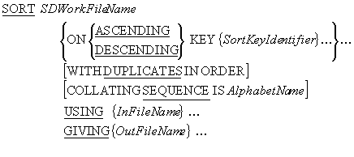
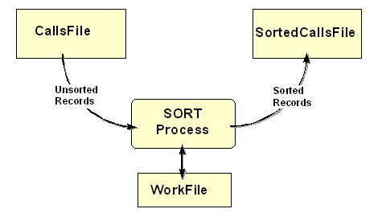
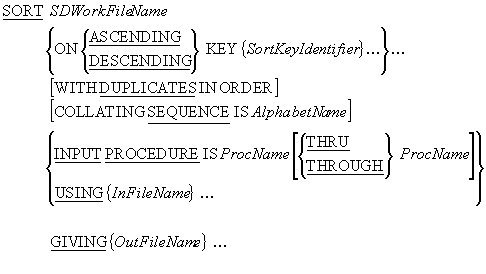
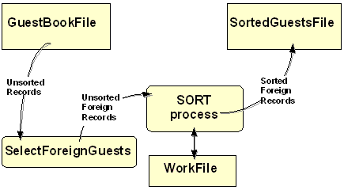
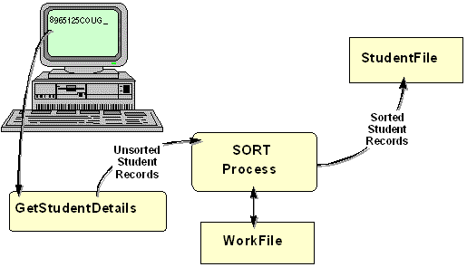
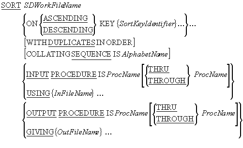
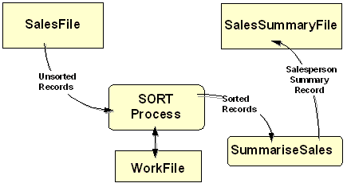
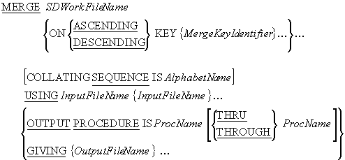

As we noted in the tutorial - Processing Sequential Files - it is possible to apply
processing to an ordered sequential file that is difficult, or impossible, when the file is
unordered.
When this kind of processing is required, and the data file we have to work with is an
unordered Sequential file, then part of the solution to the problem must be to sort the
file. COBOL provides the SORT verb for this purpose.
Sometimes, when two or more files are ordered on the same key field or fields, we may want
to combine them into one single ordered file. COBOL provides the
MERGE verb for this purpose.
This tutorial explores the syntax, semantics, and use of the
SORT and
MERGE verbs.
By the end of this unit you should -
-
Understand why you might want to sort a file as part of your solution to a programming
problem.
-
Understand the role of the temporary work file and the
USING and
GIVING files.
-
Be able to apply the
SORT to sort a file on
ascending or descending or multiple keys..
-
Understand why you might want to use an
INPUT PROCEDURE or an
OUTPUT PROCEDURE to filter or alter records.
-
Know the difference between an
INPUT PROCEDURE and
an OUTPUT PROCEDURE and know when to use one, and
when the other.
-
Be able to use the
MERGE verb to merge two or more
files.
- Understand the significance of the merge keys.
- Introduction to COBOL
- Declaring data in COBOL
- Basic Procedure Division Commands
- Selection Constructs
- Iteration Constructs
- Introduction to Sequential files
- Processing Sequential files
- Print files and variable length records
In COBOL programs, the SORT verb is usually used to sort
Sequential files.
Some programmers claim that SORT verb is unnecessary,
preferring to use a vendor-provided or "bought in" sort. But one major advantage of using
the SORT verb, is that it enhances the portability of
COBOL programs.
Because the SORT verb is available in every COBOL
compiler, when a program that uses the SORT verb has to
be moved to a different computer system, it can make the transition without requiring any
changes to the SORT. This is rarely the case when
programs rely on a vendor-supplied or "bought in" sort.
Sometimes, processing that is is difficult or impossible to do if the file is unordered, is
easy if the file is ordered. In these situations, an obvious part of the solution is to sort
the file. This is an approach to problem solving sometimes called, "beneficial wishful
thinking". We start by thinking
if only this file were ordered, then it would be easy to write the code to process it, and then take the next logical step which is - "Well then, let's sort the file first".
Consider the following specification;
A program is required to print out a monthly report detailing the value of calls made by
each telephone subscriber (i.e. anyone who has a telephone and who used it in the month
in question).
The program will use as input, the file CALLS.DAT. This file contains a record of all
the calls made that month. The cost per unit is 0.10.
The calls file in an unordered Sequential file. The record description is as follows;
FIELD TYPE LENGTH VALUE
SubscriberNum 9 8 00000001 - 99999999
UnitsUsed 9 5 00001 - 99999
The report must be printed on ascending subscriber number and has the following format;
Telephone Analysis Monthly Report
SubscriberNum ValueOfCalls
99999999 999,999.99
99999999 999,999.99
99999999 999,999.99
-------------------------------
Total value = 999,999,999.99
There are millions of telephone subscribers and, in the course of a month, they will make
tens, if not hundreds, of calls. So the calls file will contain tens of millions, or
hundreds of millions, of records. Is there any viable way for a program to produce the
report, without first sorting the calls file?
An array or table based solution does not seem viable. For one thing, the array would have
to contain millions of elements. For another, new subscribers are constantly joining, so the
array would have to be re-dimensioned every time the program ran.
If we had pointers available to us, we might try a linked list or tree based solution. But
the problem with these solutions is that, with millions of subscribers in the list or tree,
the search to find a particular subscriber would involve a serious performance hit, as well
as being complicated to implement.
Since a Relative file may be thought of as a table on disk, a Relative file solution might
beckon. But while Relative file based solution would be easy to implement (though still not
as easy as the control break solution) there would be serious performance implications. For
each of the millions of records in the file we would have to;
Read the Sequential File
IF the record already exists THEN
Read the Relative Record
Add the units to the total units
Write the Relative Record to the file
ELSE
Write a new Relative Record to the file
END-IF
And when the calls file ended we would have to read through the entire Relative file again
to create the report.
We can arrive at the most viable solution by using "beneficial wishful thinking". We might
think -
If only the calls file were ordered on ascending subscriber number, then this would be
a very simple control break problem. For each subscriber, we'd sum all the units until
there was a change of subscriber number, and then we'd multiply the total units by the
cost per unit.
This thinking would lead us to the obvious conclusion - we must sort the calls file.
The syntax for a simplified version of the SORT is shown
below. The SORT takes the records in the
InFileName file, sorts them on the SortKeyIdentifier key or keys and writes
the sorted records to the OutFileName file.

e.g.
SORT WorkFile ON ASCENDING KEY CourseCode
USING StudentFile
GIVING SortedStudentsFile.
SORT WorkFile ON ASCENDING ProvinceCode
DESCENDING VendorNumber
USING SalesFile
GIVING SortedSalesFile.
SORT notes
The SDWorkFileName identifies a temporary work file that the
SORT process uses for the sort. It is defined in the
FILE SECTION using an
SD (Stream/Sort Description) entry. Even though the work
file is a temporary file, it must still have an associated
SELECT and
ASSIGN clause in the
ENVIRONMENT DIVISION.
The SDWorkFileName file is a Sequential file with an organization of
RECORD SEQUENTIAL. Since this is the default
organization is it usually omitted; as it is in the example below.
Each SortKeyIdentifier identifies a field in the record of the work file. The sorted
file will be in sequence on this key field(s).
When more than one SortKeyIdentifier is specified, the keys decrease in significance
from left to right (leftmost key is most significant, rightmost is least significant).
InFileName and OutFileName, are the names of the input and output files
respectively.
If the DUPLICATES clause is used then, when the file has
been sorted, the final order of records with the duplicate keys is the same as that in the
unsorted file. If no DUPLICATES clause is used, the
order of records with duplicate keys is undefined.
AlphabetName is an alphabet-name defined in the
SPECIAL-NAMES paragraph of the
ENVIRONMENT DIVISION. This clause is used to select the
character set the SORT verb uses for collating the
records in the file. The character set may be ASCII (8
or 7 bit ), EBCDIC,or user-defined.
SORT rules
-
The
SORT can be used anywhere in the
PROCEDURE DIVISION except in an
INPUT or
OUTPUT PROCEDURE, or another
SORT, or a
MERGE, or in the
DECLARATIVES SECTION.
-
The records described for the input file (
USING)
must be able to fit into the records described for the SDWorkFileName.
-
The records described for the SDWorkFileName must be able to fit into the records
described for the output file (
GIVING).
-
The SortKeyIdentifier description cannot contain an
OCCURS clause (i.e., it can't be a table/array) nor
can it be subordinate to an entry that does contain one.
-
InFileName and OutFileName files are automatically opened by the
SORT. When the
SORT executes they must not be open already.
SORT example
ENVIRONMENT DIVISION.
INPUT-OUTPUT SECTION.
FILE-CONTROL.
SELECT CallsFile
ASSIGN TO CALLS.DAT
ORGANIZATION IS LINE SEQUENTIAL.
SELECT SortedCallsFile
ASSIGN TO SORTEDCALLS.DAT
ORGANIZATION IS LINE SEQUENTIAL.
SELECT WorkFile
ASSIGN TO WORK.TMP.
DATA DIVISION.
FILE SECTION.
FD CallsFile.
01 CallRec.
02 SubscriberNumCF PIC 9(8).
02 UnitsUsedCF PIC 9(5).
FD SortedCallsFile.
01 SortedCallRec.
02 SubscriberNumSF PIC 9(8).
02 UnitsUsedSF PIC 9(5).
SD WorkFile.
01 WorkRec.
02 SubscriberNumWF PIC 9(8).
02 UnitsUsedWF PIC 9(5).
etc.
PROCEDURE DIVISION.
Begin.
SORT WorkFile ON ASCENDING SubscriberNumWF
USING CallsFile
GIVING SortedCallsFile.
etc.
As illustrated by the diagram below, the sort process takes records from the input file
(CallsFile) and sorts them using the temporary file (WorkFile) on the field(s), and
in the sequence, specified in the KEY phrase. When all
the records have been sorted, the sort process writes them to the output file
(SortedCallsFile).
Remember - the SORT automatically opens the CallsFile
and the SortedCallsFile. These files must not be open when the
SORT executes or it will fail.

SORT WorkFile ON ASCENDING SubscriberNumWF
USING CallsFile
GIVING SortedCallsFile.
If you examine the SORT syntax diagram above, carefully,
you will realize that, not only can a file be sorted on a number of keys, but that one key
can be ascending while another can be descending. This is illustrated in the table below.
The table contains a sales file that has been sorted into descending VendorNumber, within
ascending ProvinceCode, by the following SORT statement;
SORT WorkFile ON ASCENDING ProvinceCode
DESCENDING VendorNumber
USING SalesFile
GIVING SortedSalesFile
Notice that ProvinceCode is the major key, and that VendorNumber is only in descending
sequence,
within ProvinceCode. The first key named in a
SORT statement is the major key and keys get less
significant with each successive declaration.
SortedSalesFile
|
Ascending
Province
Code
|
Descending
Vendor
Number
|
Remaining
Record
|
|
|
|
1
1
1
1
1
1
1
2
2
2
2
2
2
3
3
3
3
3
3
3
4
4
4
|
91234
91234
81234
71234
71234
71234
22222
91234
90345
90345
81234
81234
81111
99999
99999
91234
91234
89765
11111
11111
56789
56789
44444
|
etc.
etc.
etc.
etc.
etc.
etc.
etc.
etc.
etc.
etc.
etc.
etc.
etc.
etc.
etc.
etc.
etc.
etc.
etc.
etc.
etc.
etc.
etc.
|
Some times, not all the records in an unsorted file are required in the sorted file. Other
times, it may be that the sorted file records require additional, altered, or fewer fields,
than the unsorted records. In these cases, an
INPUT PROCEDURE can be used to eliminate unwanted
records, or to alter the format of the records, before they are submitted to the sort
process.
Since sorting is a disk-based process, and thus comparatively slow, every effort should be
made to reduce the amount of data that has to be sorted.

e.g.
SORT WorkFile ON ASCENDING CountyNumWF, VendorNumWF
INPUT PROCEDURE RejectNorthernRecs
GIVING SortedSalesFile.
SORT WorkFile ON ASCENDING CountryNameWF
INPUT PROCEDURE IS SelectForeignGuests
GIVING SortedGuestsFile.
SORT WorkFile ON ASCENDING CountryNameWF, CustomerNameWF
INPUT PROCEDURE IS RestructureRecords
GIVING SortedSubscriptionsFile.
INPUT PROCEDURE notes
When an INPUT PROCEDURE is used, it replaces the
USING phrase. The ProcName in the
INPUT PROCEDURE phrase, identifies a block of code, that
uses the RELEASE verb to supply records to the sort
process.
The INPUT PROCEDURE must finish before the sort process
sorts the records supplied to it by the procedure. That's why the records are
RELEASEd to the work file. They are stored there until
the INPUT PROCEDURE finishes and then they are sorted.
An INPUT PROCEDURE allows us to select which records,
and what type of records, will be submitted to the sort process. Because an
INPUT PROCEDURE executes before the sort process sorts
the records, only the data that is actually required in the sorted file will be sorted.
INPUT PROCEDURE rules
-
The
INPUT PROCEDURE must contain at least one
RELEASE statement to transfer the records to the
SDWorkFileName.
-
The old COBOL rules for the
SORT verb stated that
the INPUT and
OUTPUT procedures had to be self-contained sections
of code, and could not be entered from elsewhere in the program.
-
In COBOL '85,
INPUT and
OUTPUT procedures can be any contiguous group of
paragraphs or sections. The only restriction is that the range of paragraphs or sections
used, must not overlap.
A simple SORT works by taking records from the
USING file, sorting them, and then writing them to the
GIVING file. When an
INPUT PROCEDURE is used, there is no
USING file, so the
SORT process has to get its records from the
INPUT PROCEDURE . The
INPUT PROCEDURE uses the
RELEASE verb to supply the records to the
SORT, one at a time.
Although an INPUT PROCEDURE usually gets the records it
supplies to the sort process from an input file, the records can actually originate from
anywhere. For instance, if we wanted to sort the elements of a table, we could use an
INPUT PROCEDURE to send the elements, one at a time, to
the sort process. Or if we wanted to sort the records as they were entered by the user, we
could use an INPUT PROCEDURE to get the records from the
user and supply them to the sort process.
When an INPUT PROCEDURE gets its records from an input
file it can select which records to send to the sort process and can even alter the
structure of the records before they are sent.
In the example below, an INPUT PROCEDURE is used to
select only the records of foreign guests, for sorting. The diagram shows how an INPUT
PROCEDURE, is used to sit between the input file and the sort process, to filter the
records.

SORT WorkFile ON ASCENDING CountryNameWF
INPUT PROCEDURE IS SelectForeignGuests
GIVING SortedGuestsFile.
An INPUT PROCEDURE supplies records to the sort process
by writing them to the work file declared in the SORT's
SD entry. But to write the records to the work file a
special verb - the RELEASE verb is used. The syntax of
the RELEASE verb is;
RELEASE SDRecordName [FROM
Identifier]
where SDRecordName is the name of the record declared in the work file's
SD entry.
An operational template for an INPUT PROCEDURE, which
gets records from and input file and RELEASEs them to
the work file, is shown in the table below.
OPEN INPUT InFileName
READ InFileName
PERFORM UNTIL TerminatingCondition
Process input record
RELEASE SDWorkRec
READ InFileName
END-PERFORM
CLOSE InFileName
Visitors to the CSIS web site are asked to fill in a "guestbook" form. The form requests the
name of the visitor, his/her country of origin and a comment. These fields are stored, as a
fixed length record, in the GuestBook file.
The example program below prints a report showing the number of visitors from each foreign
country. The records in the GuestBook file are not in any particular order, so before the
report can be printed, the file must be sorted by CountryName.
Since we are only interested in foreign visitors, there is no point in sorting the whole
file. The program uses an INPUT PROCEDURE to select only
the records of visitors from foreign countries.
When we examine the fields of a GuestBook record, we notice that, for the purposes of this
report, the GuestName and GuestComment are irrelevant. The only field we actually need for
the report, is the CountryName field. So as well as selecting only foreign guests, the
INPUT PROCEDURE alters the structure of the GuestBook
records supplied to the sort process. Since the new records are only 20 characters in size,
rather than 80 characters, the amount of data that has to be sorted is substantially
reduced.
>>SOURCE FORMAT IS FREE
IDENTIFICATION DIVISION.
PROGRAM-ID. ForeignGuestsRpt.
AUTHOR. Michael Coughlan.
*> This program analyses the CSIS web site GuestBook file
*> and prints a report showing the number of visitors
*> to the web site from each foreign country.
ENVIRONMENT DIVISION.
INPUT-OUTPUT SECTION.
FILE-CONTROL.
SELECT GuestBookFile
ASSIGN TO "GuestBook.Dat"
ORGANIZATION IS LINE SEQUENTIAL.
SELECT WorkFile
ASSIGN TO "Work.Tmp".
SELECT SortedGuestsFile
ASSIGN TO "SortedGuests.Dat"
ORGANIZATION IS LINE SEQUENTIAL.
SELECT ForeignGuestReport
ASSIGN TO "ForeignGuest.Rpt"
ORGANIZATION IS LINE SEQUENTIAL.
DATA DIVISION.
FILE SECTION.
FD GuestBookFile.
01 GuestRec.
88 EndOfFile VALUE HIGH-VALUES.
02 GuestNameGF PIC X(20).
02 CountryNameGF PIC X(20).
88 CountryIsIreland VALUE "IRELAND".
02 GuestCommentGF PIC X(40).
SD WorkFile.
01 WorkRec.
02 CountryNameWF PIC X(20).
FD SortedGuestsFile.
01 SortedRec.
88 EndOfSortedFile VALUE HIGH-VALUES.
02 CountryNameSF PIC X(20).
FD ForeignGuestReport.
01 PrintLine PIC X(38).
WORKING-STORAGE SECTION.
01 Heading1 PIC X(37)
VALUE "CSIS Web site - Foreign Guests Report".
01 Heading2.
02 FILLER PIC X(25) VALUE " Country".
02 FILLER PIC X(8) VALUE "Visitors".
01 CountryLine.
02 FILLER PIC X(3) VALUE SPACES.
02 PrnCountryName PIC X(20).
02 PrnVisitorCount PIC BBBZZ,ZZ9.
01 ReportFooting PIC X(36)
VALUE "*** End of Foreign Guests report ***".
01 VisitorCount PIC 9(5).
PROCEDURE DIVISION.
PrintGuestReport.
SORT WorkFile ON ASCENDING CountryNameWF
INPUT PROCEDURE IS SelectForeignGuests
GIVING SortedGuestsFile.
OPEN INPUT SortedGuestsFile
OPEN OUTPUT ForeignGuestReport
WRITE PrintLine FROM Heading1
AFTER ADVANCING PAGE
WRITE PrintLine FROM Heading2
AFTER ADVANCING 2 LINES
READ SortedGuestsFile
AT END SET EndOfSortedFile TO TRUE
END-READ
PERFORM PrintReportBody UNTIL EndOfSortedFile
WRITE PrintLine FROM ReportFooting
AFTER ADVANCING 3 LINES
CLOSE SortedGuestsFile, ForeignGuestReport
STOP RUN.
SelectForeignGuests.
OPEN INPUT GuestBookFile.
READ GuestBookFile
AT END SET EndOfFile TO TRUE
END-READ
PERFORM UNTIL EndOfFile
IF NOT CountryIsIreland
MOVE CountryNameGF TO CountryNameWF
RELEASE WorkRec
END-IF
READ GuestBookFile
AT END SET EndOfFile TO TRUE
END-READ
END-PERFORM
CLOSE GuestBookFile.
PrintReportBody.
MOVE CountryNameSF TO PrnCountryName
MOVE ZEROS TO VisitorCount
PERFORM UNTIL CountryNameSF NOT EQUAL TO PrnCountryName
OR EndOfSortedFile
ADD 1 TO VisitorCount
READ SortedGuestsFile
AT END SET EndOfSortedFile TO TRUE
END-READ
END-PERFORM
MOVE VisitorCount TO PrnVisitorCount
WRITE PrintLine FROM CountryLine
AFTER ADVANCING 1 LINE.
As we noted earlier, because the INPUT PROCEDURE is
responsible for supplying records to the sort process, the records could be coming from
anywhere. We could obtain them from a table, or, as in this example, directly from the user.
As the illustration below shows, this example program gets records from the user, sorts them
on ascending StudentId, and then outputs them to the StudentFile. Notice that the sort
process only sorts the file, when the
INPUT PROCEDURE has finished.

>>SOURCE FORMAT IS FREE
IDENTIFICATION DIVISION.
PROGRAM-ID. SortInput.
AUTHOR. Michael Coughlan.
*> An example program using the SORT and an INPUT PROCEDURE.
*> The program accepts records from the user RELEASEs them
*> to the work file where they are sorted and then written
*> to the StudentFile.
*> This program allows student records to be entered in any
*> order but creates a file sorted on ascending StudentId.
ENVIRONMENT DIVISION.
INPUT-OUTPUT SECTION.
FILE-CONTROL.
SELECT StudentFile ASSIGN TO "SORTSTUD.DAT"
ORGANIZATION IS LINE SEQUENTIAL.
SELECT WorkFile ASSIGN TO "WORK.TMP".
DATA DIVISION.
FILE SECTION.
FD StudentFile.
01 StudentDetails PIC X(30).
*> The StudentDetails record has the description shown below.
*> But in this program we don't actually need to refer to any
*> of the items in the record so we have described it as
*> PIC X(30)
*> 01 StudentDetails
*> 02 StudentId PIC 9(7).
*> 02 StudentName.
*> 03 Surname PIC X(8).
*> 03 Initials PIC XX.
*> 02 DateOfBirth.
*> 03 YOBirth PIC 9(4).
*> 03 MOBirth PIC 9(2).
*> 03 DOBirth PIC 9(2).
*> 02 CourseCode PIC X(4).
*> 02 Gender PIC X.
SD WorkFile.
01 WorkRec.
02 StudentIdWF PIC 9(7).
02 FILLER PIC X(23).
PROCEDURE DIVISION.
Begin.
SORT WorkFile ON ASCENDING KEY StudentIdWF
INPUT PROCEDURE IS GetStudentDetails
GIVING StudentFile.
STOP RUN.
GetStudentDetails.
DISPLAY "Enter student details using template below."
DISPLAY "Enter no data to end.".
DISPLAY "NNNNNNNSSSSSSSSIIYYYYMMDDCCCCG".
ACCEPT WorkRec.
PERFORM UNTIL WorkRec = SPACES
RELEASE WorkRec
ACCEPT WorkRec
END-PERFORM.
The advantage of an INPUT PROCEDURE is that it allows us
to filter, or alter, records before they are supplied to the sort process and this can
substantially reduce the amount of data that has to be sorted.
An OUTPUT PROCEDURE has no such advantage. An
OUTPUT PROCEDURE only executes when the sort process has
already sorted the file.
Nevertheless, an OUTPUT PROCEDURE is useful when we
don't need to preserve the sorted file. For instance, if we are sorting records to produce a
once-off report, we can use an OUTPUT PROCEDURE to
create the report directly, without first having to create a file containing the sorted
records. This is what we do in the revised ForeignGuestsRpt program below. Instead of
creating a sorted guest file and then reading it to create the report; we use an
OUTPUT PROCEDURE to create the report directly.
An OUTPUT PROCEDURE is also useful when we want to alter
the structure of the records written to the sorted file. For instance, in the first example
program below, we use an OUTPUT PROCEDURE to summarize
the sorted records. The resulting sorted file contains summary records, rather than the
detail records, contained in the unsorted file.
The syntax diagram below is the complete syntax for the
SORT verb.

e.g.
SORT WorkFile ON ASCENDING CustNameWF
INPUT PROCEDURE IS SelectEssentialOils
OUTPUT PROCEDURE IS PrintOilSalesReport.
SORT WorkFile ON ASCENDING KEY SalespersonNumWF
USING SalesFile
OUTPUT PROCEDURE IS SummariseSales.
OUTPUT PROCEDURE notes
An OUTPUT PROCEDURE is used to retrieve sorted records
from the work file using the RETURN verb.
An OUTPUT PROCEDURE only executes after the file has
been sorted.
OUTPUT PROCEDURE rules
-
An
OUTPUT PROCEDURE must contain at least one
RETURN statement to get the records from the
SortFile.
-
The
SORT ..GIVING phrase cannot be used if an
OUTPUT PROCEDURE is used.
An OUTPUT PROCEDURE uses the
RETURN verb to retrieve sorted records from the work
file. An OUTPUT PROCEDURE can do what it likes with the
records it gets from work file. It could put them into an array, display them on the screen,
or send them to an output file.
When the OUTPUT PROCEDURE sends records to an output
file, it can control which records, and what type of records, appear in the file. For
instance, the SORT statement in the illustration below
produces a sorted SalesSummaryFile from an unsorted SalesFile.
The SalesSummaryFile is a sequential file sorted on ascending salesperson number but each
record in the summary file is the sum of all the items sold by a particular
salesperson.
An OUTPUT PROCEDURE is used because, until the records
have been sorted into salesperson number order, the quantities sold cannot be summed.

SORT WorkFile ON ASCENDING KEY SalespersonNumWF
USING SalesFile
OUTPUT PROCEDURE IS SummariseSales.
An OUTPUT PROCEDURE uses the RETURN verb to read sorted
records from the work file declared in the Sort's
SD entry. The syntax of the
RETURN verb is;
RETURN SDFileName RECORD [INTO
Identifier]
AT END
StatementBlock
END-RETURN
where SDFileName is the name of the file declared in the
SD entry.
An operational template for an OUTPUT PROCEDURE, which
gets records from the work file and writes them to an output file, is shown in the table
below. Notice that the work file is not opened by the code in the
OUTPUT PROCEDURE. The work file is automatically opened
by the SORT.
OPEN OUTPUT OutFile
RETURN SDWorkFile RECORD
PERFORM UNTIL TerminatingCondition
Setup OutRec
WRITE OutRec
RETURN SDWorkFile RECORD
END-PERFORM
CLOSE OutFile
The example below creates a sorted SalesSummaryFile from an unsorted SalesFile. The
SalesSummaryFile is a sequential file, sorted on ascending salesperson-number. Each record
in the summary file is the sum of all the items sold by a particular salesperson. An
OUTPUT PROCEDURE is used, because until the records have
been sorted into salesperson number order, the salesperson records cannot be summarized.
>>SOURCE FORMAT IS FREE
IDENTIFICATION DIVISION.
PROGRAM-ID. MakeSummaryFile.
AUTHOR. Michael Coughlan.
ENVIRONMENT DIVISION.
INPUT-OUTPUT SECTION.
FILE-CONTROL.
SELECT WorkFile ASSIGN TO "WORK.TMP".
SELECT SalesFile ASSIGN TO "SALES.DAT"
ORGANIZATION IS LINE SEQUENTIAL.
SELECT SalesSummaryFile ASSIGN TO "SUMMARY.DAT"
ORGANIZATION IS LINE SEQUENTIAL.
DATA DIVISION.
FILE SECTION.
FD SalesFile.
01 SalesRec PIC X(10).
SD WorkFile.
01 WorkRec.
88 EndOfWorkFile VALUE HIGH-VALUES.
02 SalespsnNumWF PIC X(5).
02 QtySoldWF PIC 9(4).
FD SalesSummaryFile.
01 SummaryRec.
02 SalespsnNum PIC 9(5).
02 TotalQtySold PIC 9(6).
PROCEDURE DIVISION.
Begin.
SORT WorkFile ON ASCENDING KEY SalespsnNumWF
USING SalesFile
OUTPUT PROCEDURE IS SummariseSales
STOP RUN.
SummariseSales.
OPEN OUTPUT SalesSummaryFile
RETURN WorkFile
AT END SET EndOfWorkFile TO TRUE
END-RETURN
PERFORM UNTIL EndOfWorkFile
MOVE SalespsnNumWF TO SalespsnNum
MOVE ZEROS TO TotalQtySold
PERFORM UNTIL SalespsnNumWF NOT = SalespsnNum
OR EndOfWorkFile
ADD QtySoldWF TO TotalQtySold
RETURN WorkFile
AT END SET EndOfWorkFile TO TRUE
END-RETURN
END-PERFORM
WRITE SummaryRec
END-PERFORM
CLOSE SalesSummaryFile.
This example program is a revised version of the Foreign Guest Report program. In this
example, instead of creating a sorted file which is read to create the report; the report is
created directly from the OUTPUT PROCEDURE. This has the
effect of making the program simpler and shorter, since we no longer need all the sorted
file declarations.
>>SOURCE FORMAT IS FREE
IDENTIFICATION DIVISION.
PROGRAM-ID. ForeignGuestsRpt2.
AUTHOR. Michael Coughlan.
*> This program analyses the CSIS web site GuestBook file
*> and uses an OUTPUT PROCEDURE to print a report showing
*> the number of visitors to the web site from each
*> foreign country.
ENVIRONMENT DIVISION.
INPUT-OUTPUT SECTION.
FILE-CONTROL.
SELECT GuestBookFile
ASSIGN TO "GuestBook.Dat"
ORGANIZATION IS LINE SEQUENTIAL.
SELECT WorkFile
ASSIGN TO "Work.Tmp".
SELECT ForeignGuestReport
ASSIGN TO "ForeignGuest.Rpt"
ORGANIZATION IS LINE SEQUENTIAL.
DATA DIVISION.
FILE SECTION.
FD GuestBookFile.
01 GuestRec.
88 EndOfFile VALUE HIGH-VALUES.
02 GuestNameGF PIC X(20).
02 CountryNameGF PIC X(20).
88 CountryIsIreland VALUE "IRELAND".
02 GuestCommentGF PIC X(40).
SD WorkFile.
01 WorkRec.
88 EndOfWorkFile VALUE HIGH-VALUES.
02 CountryNameWF PIC X(20).
FD ForeignGuestReport.
01 PrintLine PIC X(38).
WORKING-STORAGE SECTION.
01 Heading1 PIC X(37)
VALUE "CSIS Web site - Foreign Guests Report".
01 Heading2.
02 FILLER PIC X(25) VALUE " Country".
02 FILLER PIC X(8) VALUE "Visitors".
01 CountryLine.
02 FILLER PIC X(3) VALUE SPACES.
02 PrnCountryName PIC X(20).
02 PrnVisitorCount PIC BBBZZ,ZZ9.
01 ReportFooting PIC X(36)
VALUE "*** End of Foreign Guests report ***".
01 VisitorCount PIC 9(5).
PROCEDURE DIVISION.
PrintForeignGuestReport.
SORT WorkFile ON ASCENDING CountryNameWF
INPUT PROCEDURE IS SelectForeignGuests
OUTPUT PROCEDURE IS PrintGuestReport.
STOP RUN.
SelectForeignGuests.
OPEN INPUT GuestBookFile.
READ GuestBookFile
AT END SET EndOfFile TO TRUE
END-READ
PERFORM UNTIL EndOfFile
IF NOT CountryIsIreland
MOVE CountryNameGF TO CountryNameWF
RELEASE WorkRec
END-IF
READ GuestBookFile
AT END SET EndOfFile TO TRUE
END-READ
END-PERFORM
CLOSE GuestBookFile.
PrintGuestReport.
OPEN OUTPUT ForeignGuestReport
WRITE PrintLine FROM Heading1
AFTER ADVANCING PAGE
WRITE PrintLine FROM Heading2
AFTER ADVANCING 2 LINES
RETURN WorkFile
AT END SET EndOfWorkFile TO TRUE
END-RETURN
PERFORM PrintReportBody UNTIL EndOfWorkFile
WRITE PrintLine FROM ReportFooting
AFTER ADVANCING 3 LINES
CLOSE ForeignGuestReport.
PrintReportBody.
MOVE CountryNameWF TO PrnCountryName
MOVE ZEROS TO VisitorCount
PERFORM UNTIL CountryNameWF NOT EQUAL TO PrnCountryName
OR EndOfWorkFile
ADD 1 TO VisitorCount
RETURN WorkFile
AT END SET EndofWorkFile TO TRUE
END-RETURN
END-PERFORM
MOVE VisitorCount TO PrnVisitorCount
WRITE PrintLine FROM CountryLine
AFTER ADVANCING 1 LINE.
It is often useful to combine two or more files into a single large file. If the files are
unordered, this is easy to accomplish because we can simply append the records in one file
to the end of the other. But if the files are unordered, the task is somewhat more
complicated, especially if there are more than two files, because we must preserve the
ordering in the combined file.
In COBOL, instead of having to write special code every time we want to merge files, we can
use the MERGE verb. The
MERGE verb takes two or more identically sequenced files
and combines them, according to the key values specified. The combined file is then sent to
an output file or an OUTPUT PROCEDURE.

e.g.
MERGE MergeWorkFile
ON ASCENDING KEY TransDateWF, TransCodeWF, StudentIdWF
USING InsertTransFile, DeleteTransFile, UpdateTransFile
GIVING CombinedTransFile.
MERGE notes
The results of the MERGE verb are predictable only when
the records in the input files are ordered as described in the
KEY clause associated with the
MERGE statement. For instance, if the
MERGE statement has an
ON DESCENDING KEY StudentId clause, then all the
USING files must be ordered on descending StudentId.
As with the SORT, the SDWorkFileName is the name
of a temporary file, with an SD entry in the
FILE SECTION, a
SELECT and
ASSIGN entry in the
INPUT-OUTPUT SECTION, and an organization of RECORD
SEQUENTIAL.
Each MergeKeyIdentifier identifies a field in the record of the work file. The sorted
file will be in sequence on this key field(s).
When more than one MergeKeyIdentifier is specified, the keys decrease in significance
from left to right (leftmost key is most significant, rightmost is least significant).
InFileName and OutFileName, are the names of the input and output files
respectively. These files are automatically opened by the
MERGE. When the
MERGE executes they must not be already open.
AlphabetName is an alphabet-name defined in the
SPECIAL-NAMES paragraph of the
ENVIRONMENT DIVISION. This clause is used to select the
character set the SORT verb uses for collating the
records in the file. The character set may be ASCII (8
or 7 bit ), EBCDIC,or user-defined.
The MERGE can use an
OUTPUT PROCEDURE and the
RETURN verb to get merged records from the
SDWorkFileName.
The OUTPUT PROCEDURE only executes after the files have
been merged and must contain at least one
RETURN statement to get the records from the SortFile.
In this example program, instead of writing code to insert records from a transaction file
into an ordered master file, we have used the
MERGE verb to merge the files.
>>SOURCE FORMAT IS FREE
IDENTIFICATION DIVISION.
PROGRAM-ID. MergeFiles.
AUTHOR. MICHAEL COUGHLAN.
*> Example program demonstrating the use of the MERGE.
*> The program merges the file Students.Dat and
*> Transins.Dat to create a new file Students.New
ENVIRONMENT DIVISION.
INPUT-OUTPUT SECTION.
FILE-CONTROL.
SELECT StudentFile ASSIGN TO "STUDENTS.DAT"
ORGANIZATION IS LINE SEQUENTIAL.
SELECT InsertionsFile ASSIGN TO "TRANSINS.DAT"
ORGANIZATION IS LINE SEQUENTIAL.
SELECT NewStudentFile ASSIGN TO "STUDENTS.NEW"
ORGANIZATION IS LINE SEQUENTIAL.
SELECT WorkFile ASSIGN TO "WORK.TMP".
DATA DIVISION.
FILE SECTION.
FD StudentFile.
01 StudentRec PIC X(30).
FD InsertionsFile.
01 InsertionRec PIC X(30).
FD NewStudentFile.
01 NewStudentRec PIC X(30).
SD WorkFile.
01 WorkRec.
02 StudentIdWF PIC 9(7).
02 FILLER PIC X(23).
PROCEDURE DIVISION.
Begin.
MERGE WorkFile
ON ASCENDING KEY StudentIdWF
USING InsertionsFile, StudentFile
GIVING NewStudentFile.
STOP RUN.